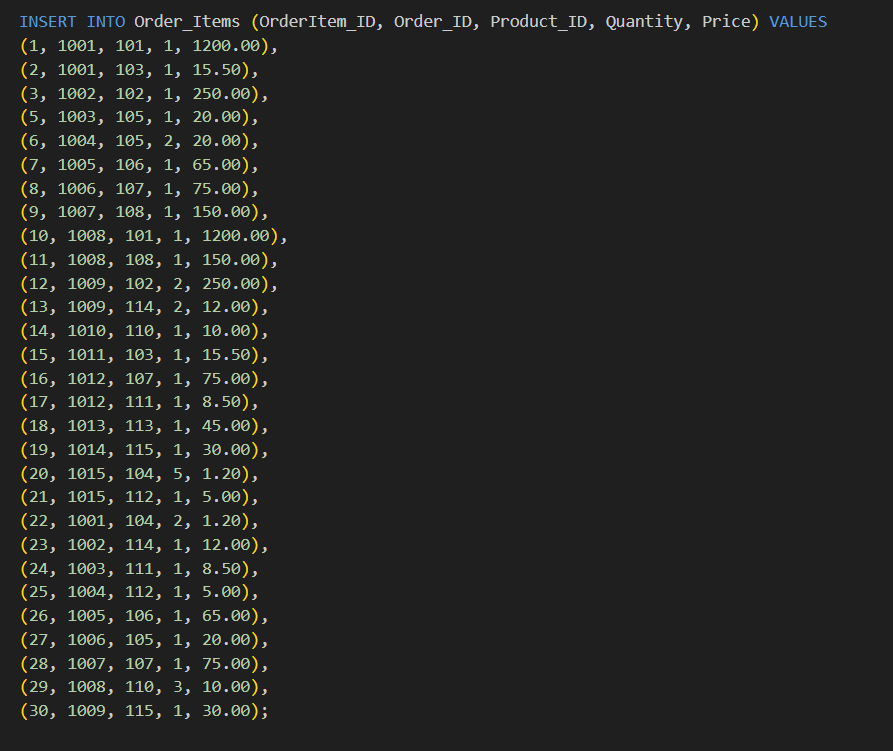
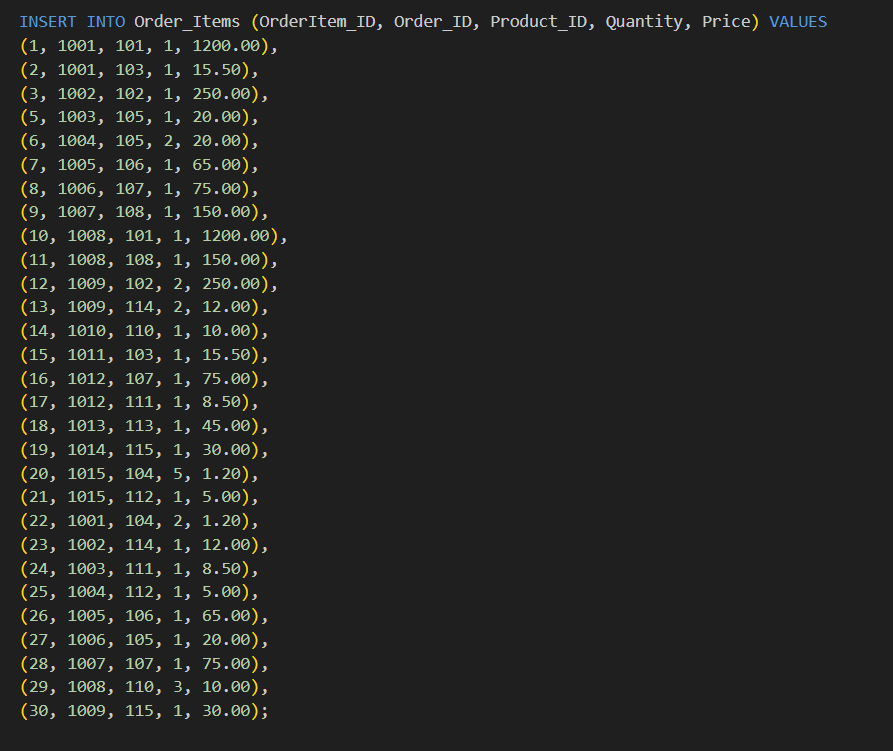

SQL Sales Data Project: From Design to Real Life Insights
Project Overview
This SQL project is all about getting hands-on with sales data. I took it from the very beginning – designing the database – all the way to writing queries that answer real business questions. The main idea was to show how I can set up a database, put data into it, and then use SQL to find useful information. It’s a good look at my practical SQL skills and how I approach turning data into actual insights.
- Conceptualized and designed a relational schema for a sales system involving core entities: Customers, Products, Orders, and Order_Items.
- Defined appropriate columns, data types, and PRIMARY KEY constraints for each table.
Key Stages & Skills Demonstrated
1. Database and Schema Design:
- Utilized SQL DDL commands (CREATE DATABASE, CREATE TABLE) to establish the database and implement the schema in PostgreSQL.
2. Database & Table Creation (PostgreSQL):
- UPopulated tables with sample data using INSERT INTO statements to simulate realistic records.
3. Data Population:
 

- Developed SQL queries to address specific business needs, employing techniques such as SELECT, WHERE, INNER JOIN, SUM(), COUNT(), GROUP BY, HAVING, ORDER BY, and CONCAT().
4. Data Querying & Analysis:
- Scenario: A marketing manager wants a list of all recent orders (placed on or after a specific date, e.g., '2023-10-05'), showing the Order ID, Order Date, and the Full Name of the customer who placed the order.
Business Questions Addressed & Analyzed
Identify Recent Customer Activity: Generated a targeted list of recent orders (placed on or after a specified date), displaying essential details like Order ID and Order Date, alongside the full name of the purchasing customer. This allows for timely follow-up or analysis of recent buyer behavior.
Key SQL: JOIN, CONCAT, WHERE (date filtering)
Analyze Revenue Performance by Product Category: Calculated and summarized the total revenue generated by each distinct product category. This provides a clear view of which categories are top financial performers and which might need more attention.
Key SQL: JOIN, SUM(), GROUP BY
Segment Customers by Order Frequency: Identified customers who have placed multiple orders (specifically, more than one), ranking them by their order count. This helps in recognizing repeat customers for loyalty programs or targeted marketing.
Key SQL: JOIN, SUM(), GROUP BY
Evaluate Product Sales Volume: Determined the total quantity sold for each individual product across all transactions, presenting a ranked list of best-selling items. This insight is crucial for inventory management and understanding product popularity.
Key SQL: JOIN, SUM(), GROUP BY, ORDER BY
Assess Customer Lifetime Value (Total Spending): Calculated the total monetary amount spent by each customer across all their orders, identifying high-value customers. This is fundamental for customer segmentation and strategic relationship management.
Key SQL: JOIN, SUM(), GROUP BY, CONCAT, ORDER BY
Tools & Technologies
- Database Management System (DBMS): PostgreSQL
- Integrated Development Environment (IDE): Visual Studio Code
- SQL Extension: SQLTOOLS (for VS Code)